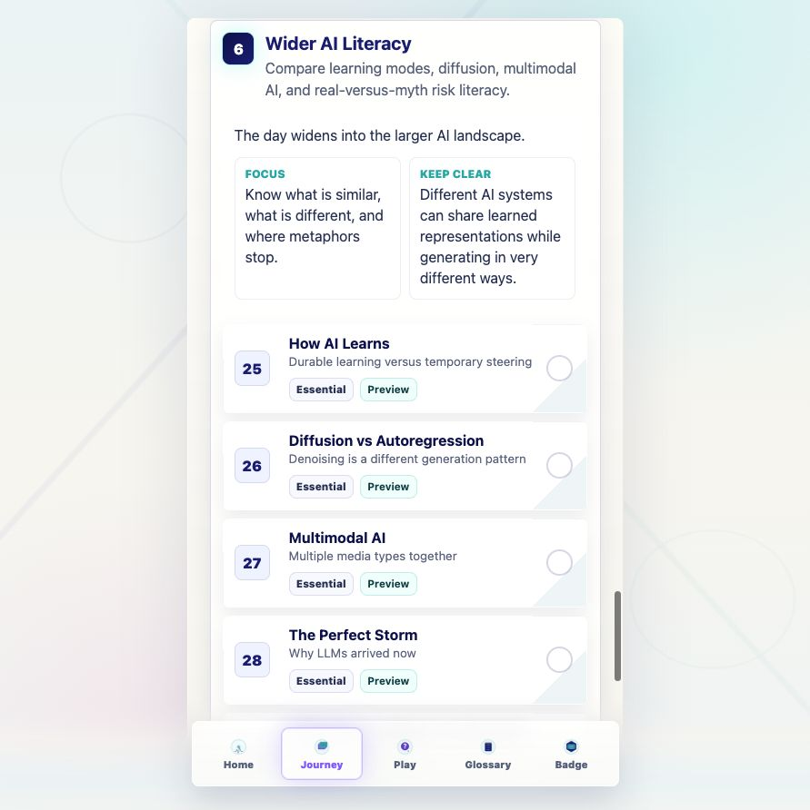
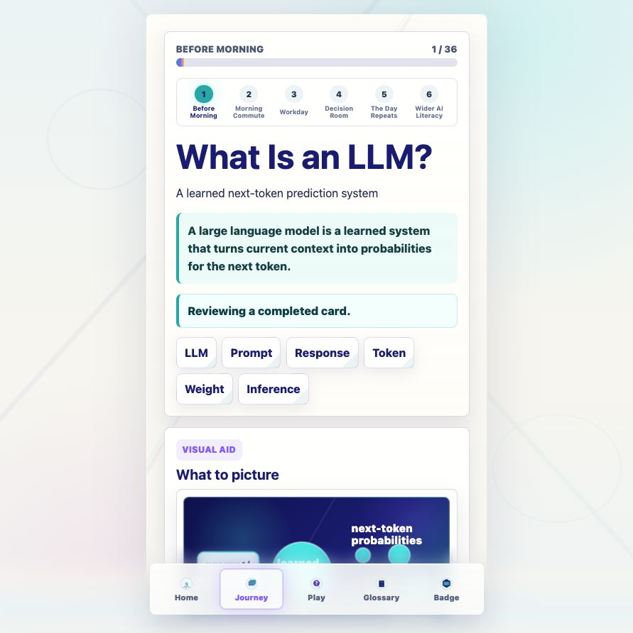
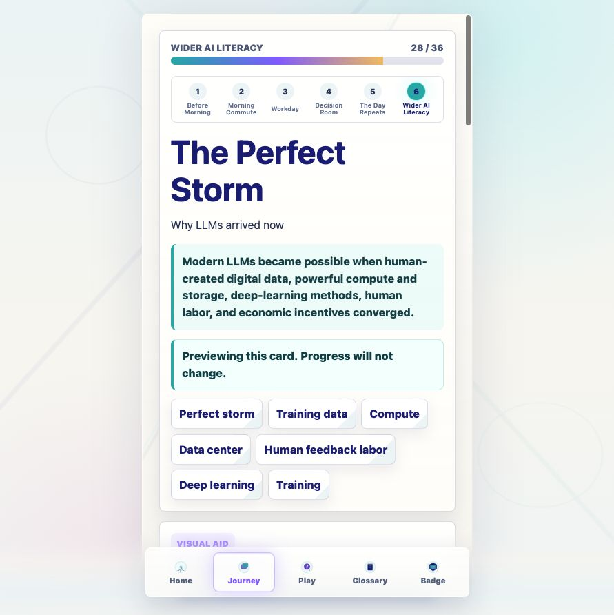
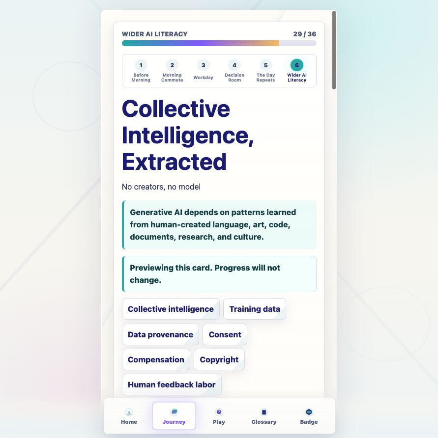
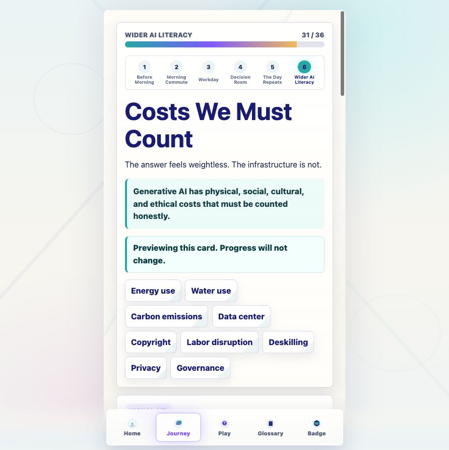
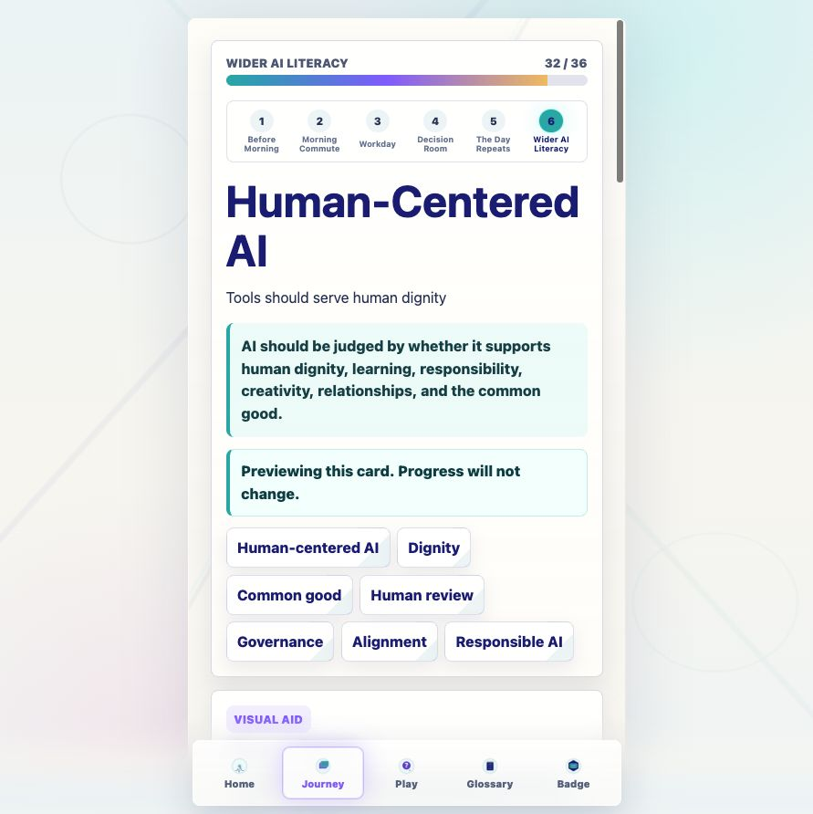
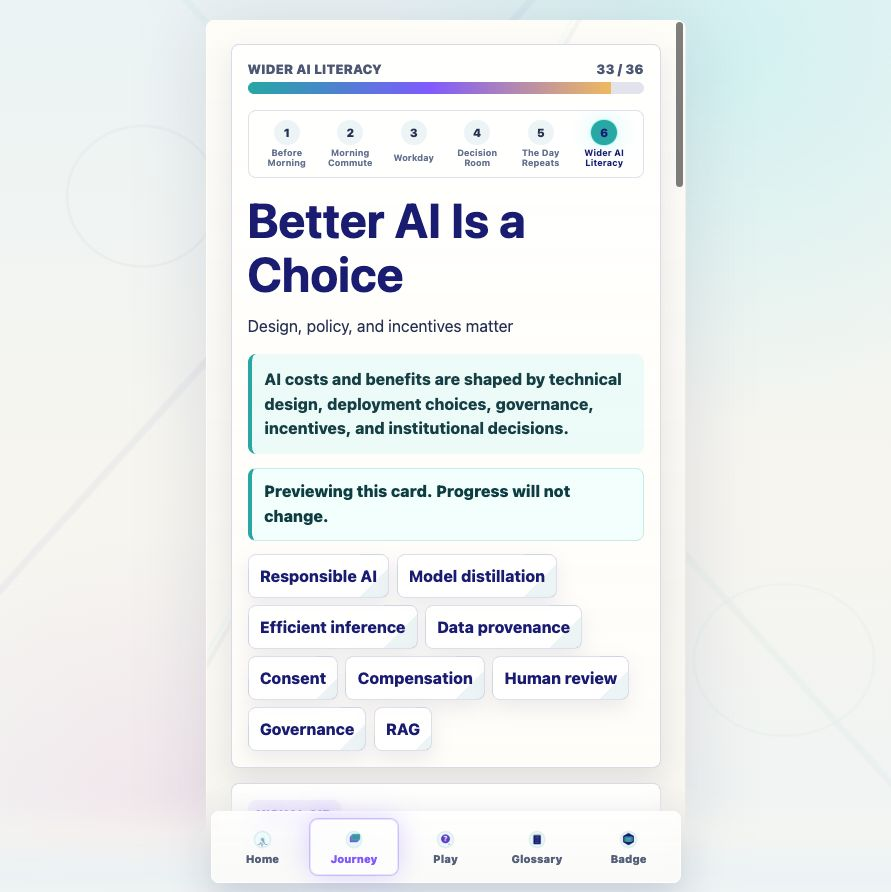
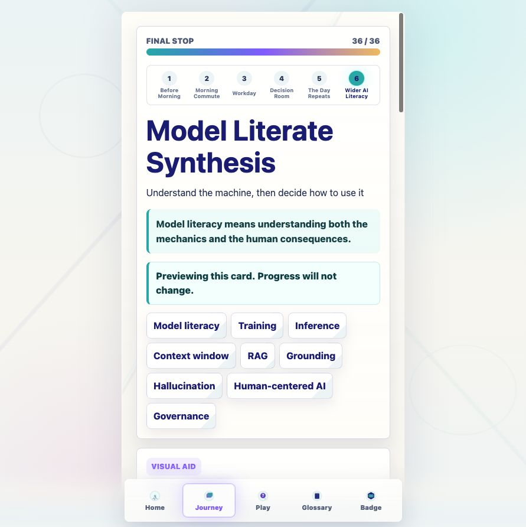
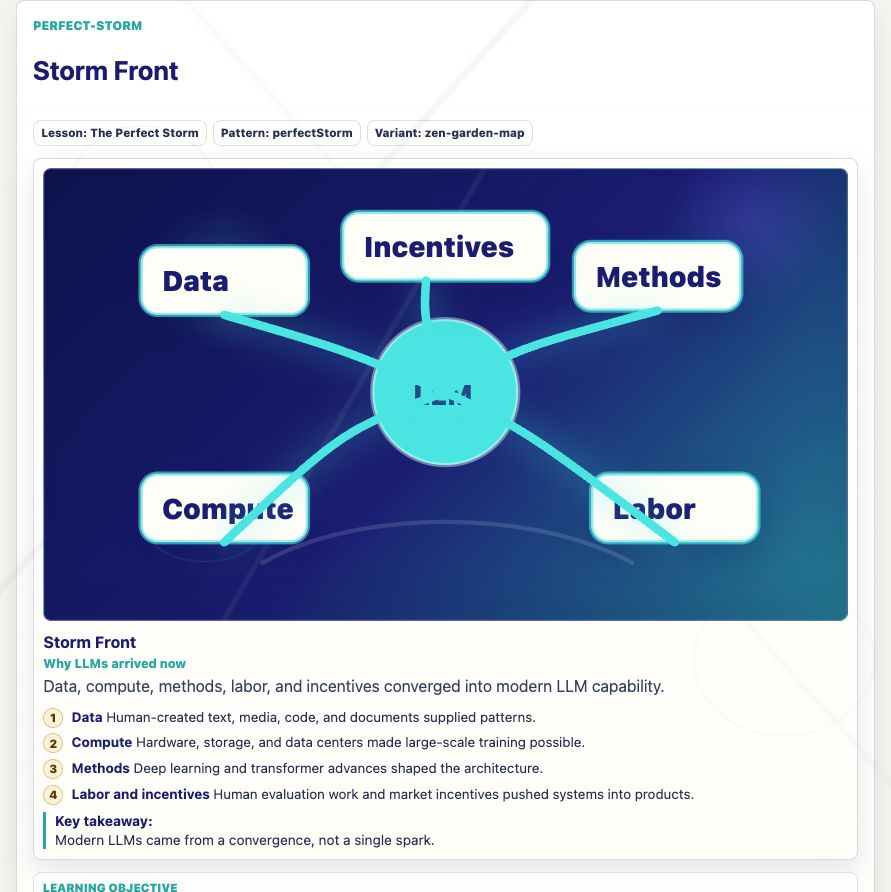

Prompt Life v0.12
Wider AI Literacy Implementation + UX Repair
Internal report generated 2026-06-04. This PDF wraps the response summary and screenshots for the v0.12 implementation pass.
What Changed
Journey cardsAdded eight Wider AI Literacy draft cards and one final synthesis card position.
ModesAdded Learn, Preview, and Review behavior with progress-safe Return to Journey actions.
VisualsAdded eight coded SVG/HTML placeholder visual aids; no generated PNG assets.
ReadabilityImproved key contrast issues and added reusable text-surface utility classes.
Preview and Review modes do not update lesson completion, reflection progress, or badge progress. Learn mode keeps the normal checkpoint-gated Next lesson behavior.
Files Changed
src/main.tsxsrc/data/content.tssrc/components/VisualAids.tsxsrc/styles/global.cssdocs/curriculum/WIDER_AI_IMPLEMENTATION_REPORT_V0_12.mddocs/curriculum/WIDER_AI_SOURCE_NEEDS_V0_12.mddocs/design/GENERATED_VISUAL_ASSET_PLAN_V0_11.mddocs/REVIEW_NOTES.mddocs/screenshots/v0-12-*.png
New Journey Cards
- The Perfect Storm
- Collective Intelligence, Extracted
- Benefits Worth Taking Seriously
- Costs We Must Count
- Human-Centered AI
- Better AI Is a Choice
- Effective Prompting from Model Literacy
- Model Literate Synthesis
RAG and Retrieval remains a dedicated Journey card. Grounding and Hallucinations remain glossary/RAG concepts for now; a future pass should decide whether each deserves a dedicated Journey card.
Verification
npm install: passed before implementation.npm run typecheck: passed before and after implementation.npm run build: passed before and after implementation.- Browser QA verified Preview, Review, Learn completion, Next Lesson, Return to Journey, focus, and top-scroll behavior.
- Known build note: Vite reports a single app chunk over 500 kB after minification. No heavy dependency was added.
Screenshots









Known Issues
- Wider AI cards are draft curriculum copy and need source review before citation-heavy publication.
- Generated PNG assets remain deferred by design.
- Older concept animation panels are readable but should later migrate to the v0.10 visual identity style.
- Grounding and Hallucinations may deserve dedicated Journey cards in a future curriculum architecture pass.
Next Three v0.13 Steps
- Source-review the Wider AI claims and add scoped citations where needed.
- Decide whether Grounding and Hallucinations become dedicated Journey cards.
- Refine the eight new coded visual aids after iPhone review.